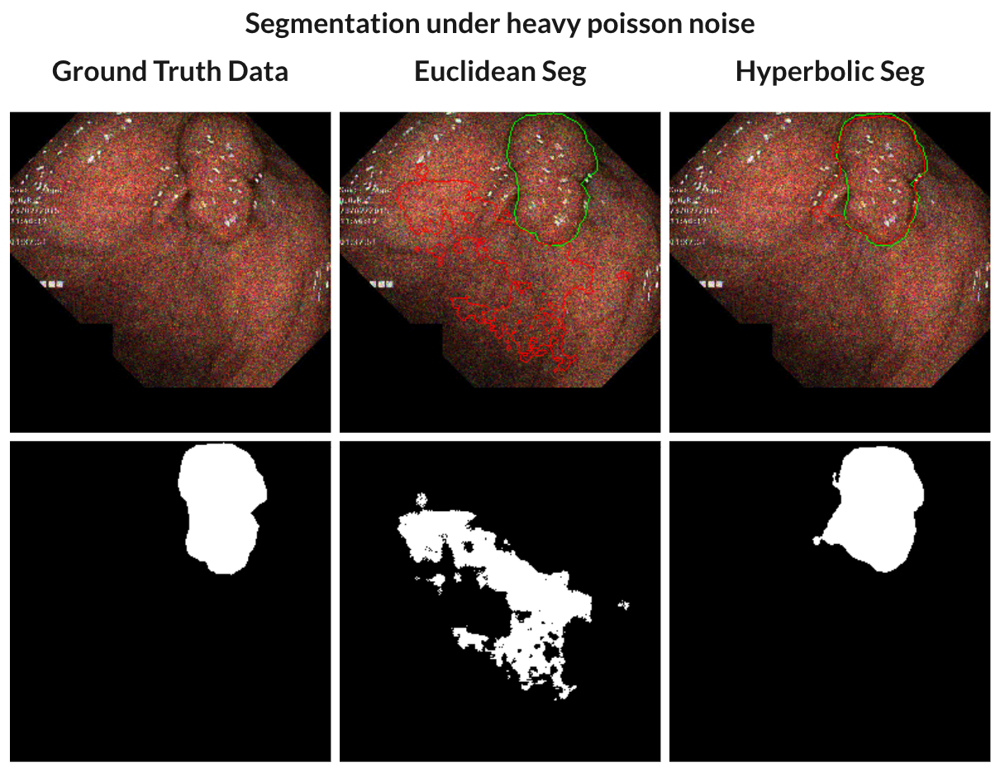
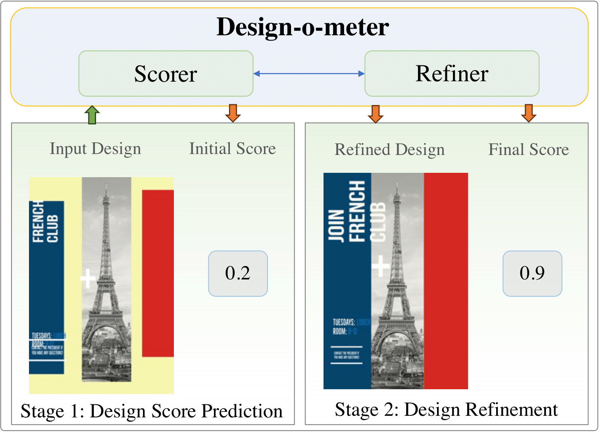
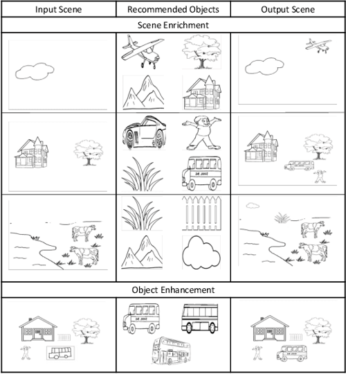
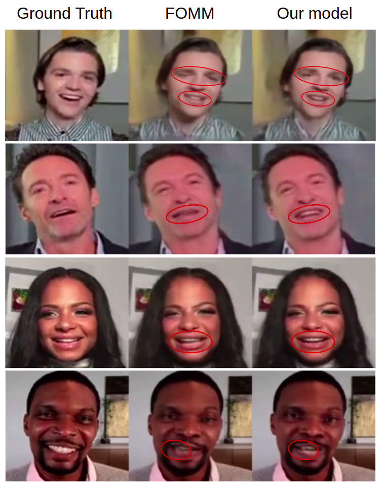
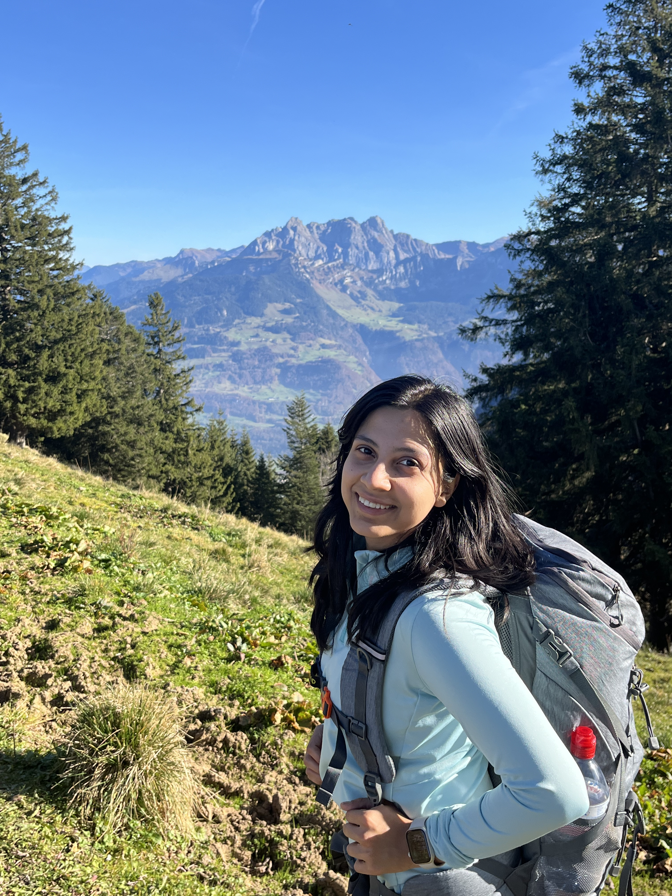
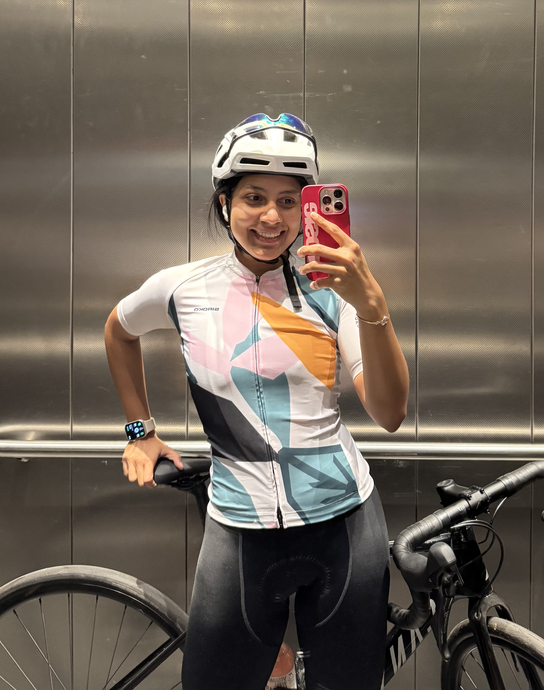
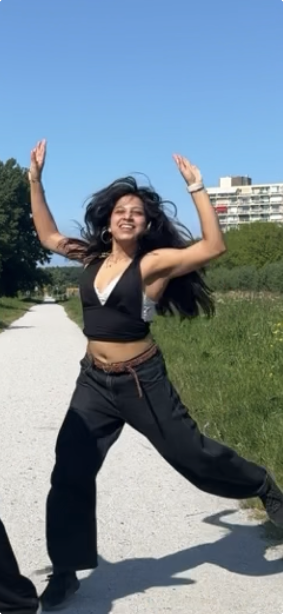
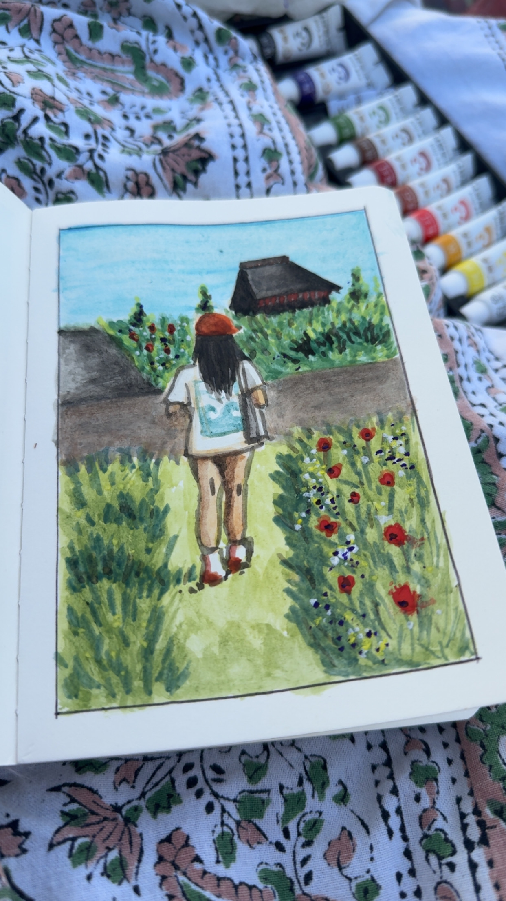
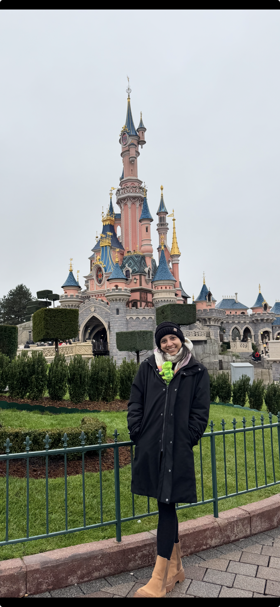

I build deep learning models that help dentists see what's easy to miss. Currently a PhD researcher at the University of Amsterdam, previously at Adobe Research working on controlled video and image generation.
PhD candidate, HAVA Lab · publications across MIDL, WACV and Nature Scientific Reports.

Hyperbolic U-Net for Robust Medical Image Segmentation
We propose Hyperbolic U-Net, with hyperbolic 2D transpose convolution and hyperbolic bilinear upsampling layers that make it possible to create decoders, and Newton's approximation-scaled weight initialization, which ensures norm preservation for all layers at the start of training. Empirically, our Hyperbolic U-Nets strongly outperform standard Euclidean U-Nets across multiple medical image datasets for out-of-the-box noise and contrast shift.
Flow Warping of Self-Attention for Clothing Animation Generation
We propose FloAtControlNet, a diffusion model-based approach to generate cinemagraphs composed of animations of human clothing. The key observation is that the underlying animation is embedded in the flow of the normal maps. We utilize the flow thus obtained to manipulate the self-attention maps of appropriate layers.

Design-o-Meter: Towards Evaluating and Refining Graphic Designs
To evaluate the quality of machine-generated graphic designs, we introduce Design-o-meter, a data-driven method that scores and refines designs. Our approach outperforms baselines including recent Multimodal LLM-based approaches.
A Deepfake-Based Study on Facial Expressiveness and Social Outcomes
As a proof of concept, we test the replicability of past results regarding the positive effects of facial expressiveness (gazing, nodding, smiling) on social outcomes using AI-generated faces via deepfake-based technologies.

SketchBuddy: Context-Aware Sketch Enrichment and Enhancement
We propose SketchBuddy, a framework that retrieves diverse fine-grained object suggestions to enrich a sketch and coherently inserts them into the scene by detecting objects to estimate scene context.

A Hybrid Rigid and Non-Rigid Motion Approximation for Generating Realistic Listening Behavior Videos
We propose a hybrid model that approximates a given motion using both first-order and zero-order motion, accounting for rigid and non-rigid body-based motions to reduce artifacts around the lip and eye regions.
Firm Dynamics and Employee Performance Management in Duopoly Markets
We extend an existing firm model to introduce employee motivation and a CEO agent with parameters for leadership and managerial qualities, incorporating the vitality curve to better capture real-world firm dynamics such as the Peter Principle.
When I'm not training models, I love being outside.

between trails
a 100km ride
mid-turn
flow state
main character